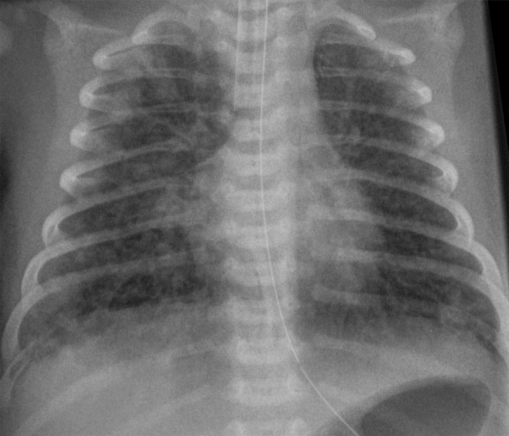
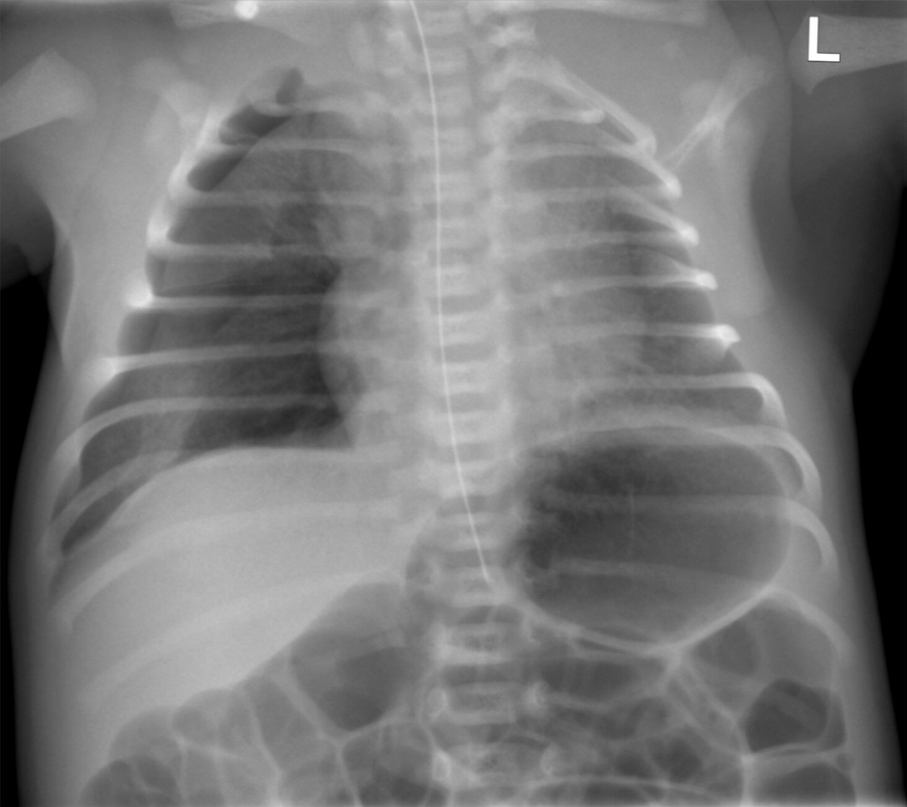

Página 7.1 · M7Estratégia E3 · Caso clínico em aberturaItens [001]–[023]
Caso João da Elvira Maria: o paradigma operacional desta sequência
Vinheta clínica · João da Elvira Maria
RN 38 sem, mãe Elvira Maria (32 a), cesárea por desproporção cefalopélvica (sem trabalho de parto). Banhado em mecônio fluido + apneia ao nascer. ASPAS + calor radiante (cross-link M3 §3.3). Na 1ª h: FR 80, SatO₂ 85%. Hood FiO₂ 40%. RX: pulmão expandido + linha de cisura evidenciada à direita + congestão peri-hilar + área cardíaca normal. Hemograma 3 h: leucometria normal + Ht 50%. Eupneico em 23 h.
Pergunta integradora: qual o diagnóstico provável e qual o principal diferencial que precisa ser excluído?
Bora pra mais uma — agora conhecendo Elvira Maria e o filho dela
Atenção logo de cara: este João não é o João Eucalipto de M1, M3 e M5. Outro paciente, outra família. Sempre que aparecer só "João" nesta sequência, é o João da Elvira Maria — matronymico obrigatório, anti-confusão narrativa.
Elvira Maria é uma puérpera de 32 anos, na 38ª semana de uma gravidez saudável e sem intercorrência. Foi indicada à cesárea por desproporção cefalopélvica — indicação obstétrica válida, não é cesárea eletiva sem motivo, mas guarde a informação: não houve trabalho de parto antes do nascimento. Esse detalhe vai pesar adiante.
A criança nasceu. Elvira Maria deu à luz o João. Joãozinho, coitado, nasceu banhado em mecônio fluido e em apneia.
Felizmente havia um pediatra capacitado na sala de parto. O João foi conduzido à unidade de calor radiante para os primeiros cuidados. O que foi feito com ele: ASPAS — aquece, seca, posiciona e aspira se necessário. Detalhamento integral do ASPAS vive em M3 §3.3. Aqui basta saber que a sequência canônica de cuidados iniciais foi executada corretamente.
O João evoluiu com taquipneia já na primeira hora de vida, com frequência respiratória de 80. Foi levado ao TN neonatal para monitorização e investigação diagnóstica. O oxímetro mostrava saturação de 85%.
Pausa. Antes de inundar a página com mais dados, aplique o que se aprendeu em M6 §6.2 — o roteiro das 3 perguntas pra qualquer dispneia neonatal:
O hemograma colhido na terceira hora de vida mostrou leucometria normal (e leucometria normal em sepse neonatal tem alto valor preditivo negativo — cross-link M6 §6.10) e hematócrito de 50% (faixa fisiológica normal RN termo 42-65%; nem anêmico, nem policitêmico).
Conduta inicial: João foi colocado em capacete Hood, capacete plástico em que a criança fica respirando uma mistura enriquecida em oxigênio, com FiO₂ de 40%.
Olhe os achados radiográficos juntos: pulmão bem expandido + linha de cisura evidenciada + congestão peri-hilar. Só existe uma doença capaz de levar exatamente a esses achados. É a taquipneia transitória do recém-nascido (TTRN) — essa é a principal hipótese.
Pergunta integradora pra você, agora: qual o diagnóstico definitivo do João, e qual o principal diferencial que precisa ser excluído? Não responda ainda. Pense. A resposta completa, com construção do raciocínio de diferencial, vem em 7.13. O caminho até lá passa por entender TTRN integralmente (próximas 5 páginas), entender SAM integralmente (4 páginas), entender HPPN como complicação possível (1 página), comparar radiografias (1 página) e fechar o caso.
Conexão com a próxima página → Pra entender por que essa criança tem líquido na cisura interlobar e desconforto respiratório resolvendo em 24 h, é preciso entender o que é, em primeiro lugar, esse líquido. 7.2 explica a fisiopatologia do líquido pulmonar fetal e por que ele atrapalha quando não é reabsorvido a tempo.
Quiz · fixação
Q1 · V/F
O Caso João da Elvira Maria e o Caso João Eucalipto referem-se ao mesmo paciente em momentos diferentes da pediatria.
Falso. São pacientes distintos com mães distintas (Elvira Maria × mãe do João Eucalipto, que apareceu em M1 com sífilis materna). A coincidência nominal é narrativa.
O matronymico "da Elvira Maria" é o discriminador obrigatório nesta sequência — pegadinha clássica que confunde o reflexo cognitivo do aluno.
Q2 · múltipla escolha
Aplicando o roteiro das 3 perguntas de M6 §6.2 ao Caso João da Elvira Maria (RN 38 sem, cesárea sem trabalho de parto, taquipneia precoce + RX com cisura evidenciada + congestão peri-hilar + hemograma normal + melhora rápida em 23 h), qual a hipótese diagnóstica principal?
Gabarito B. TTRN sustentada por (1) RN termo, (2) cesárea sem trabalho de parto, (3) RX patognomônico "pulmão úmido", (4) evolução autolimitada 23 h.
Distractor A (SDR) cabe em RNPT < 34 sem como Firmindo; distractor C (SAM) precisa de "grosseiro" + hiperinsuflado em pós-termo com mecônio; distractor D (sepse) exigiria leucometria alterada ou fatores maternos.
Q3 · múltipla escolha
Por que a leucometria normal de João tem peso clínico relevante na exclusão de sepse precoce, mesmo sem ser exame único definitivo?
Gabarito B. Alto VPN da leucometria pra sepse precoce está estabelecido em M6 §6.10 (laudo dual aplicado lá; reusado aqui sem duplicar).
Distractor A é absoluto demais (leucometria sozinha não exclui — reduz fortemente a probabilidade pré-teste); distractor C confunde papéis (hemocultura permanece padrão-ouro); distractor D é não-sequitur.
Por que esse pulmão de termo, aparentemente normal, está cheio de líquido?
A taquipneia transitória do recém-nascido é a doença relacionada com um atraso na absorção do líquido pulmonar. Júlia já vai perguntar: "Que líquido?" — o eu líquido. O líquido que ocupa a própria árvore respiratória do feto.
Pausa pra absorver isso. Durante toda a vida fetal, durante toda a vida intrauterina, o epitélio respiratório está secretando líquido. Sim — secretando líquido para dentro da árvore respiratória. Isso não é erro, não é exceção, não é doença. É o padrão fisiológico fetal.
Essa secreção de líquido para dentro da árvore respiratória é necessária para o desenvolvimento pulmonar. O pulmão precisa estar preenchido por líquido pra crescer corretamente — pra os alvéolos se formarem, pra a vascularização pulmonar se desenvolver, pra a arquitetura tridimensional do parênquima ficar pronta.
Então em algum momento isso precisa mudar. E muda assim:
Conforme a gestação vai se aproximando do termo, e principalmente depois que o trabalho de parto começa, o epitélio respiratório muda o seu perfil. Para de secretar e começa a reabsorver. O epitélio inverte função — de produtor passa a consumidor — e começa a reabsorver líquido. E isso tem que acontecer para a transição pulmonar pós-natal funcionar. Sem essa inversão, o pulmão chega ao nascimento ainda encharcado.
Pronto. Agora a doença é óbvia: quem é a criança da taquipneia transitória do recém-nascido?
Por algum motivo (mais comum: ausência de trabalho de parto, fator central da próxima página), o epitélio respiratório dela não recebeu o sinal de inverter função. Continua produzindo, ou no mínimo deixou de reabsorver. O bebê nasce com a árvore respiratória ainda parcialmente preenchida por líquido — e aí precisa fazer essa reabsorção pós-natal, em correria, depois do nascimento. Durante esse atraso, surgem os sintomas: taquipneia (o pulmão tenta compensar a área de troca reduzida), desconforto leve, congestão hilar visível na RX (o sistema linfático vascular está trabalhando intensamente pra drenar o líquido).
O bebezinho nasce, taca-lhe de reabsorver o líquido, e a história vai melhorando. Por isso o nome — transitória. Tudo isso resolve assim que a árvore respiratória terminar a reabsorção, e isso leva horas.
2 painéis lado a lado: pulmão fetal (intraútero, alvéolos preenchidos, células bombeando para dentro) × pulmão pós-trabalho-de-parto (alvéolos com líquido residual, células bombeando para fora). Seta horizontal central rotulada "início do trabalho de parto = sinal de inversão epitelial". Ilustração pendente pelo ilustrador-medico-bauer.
Conexão com a próxima página → Se o gatilho da inversão epitelial é o trabalho de parto, quem é a criança em risco máximo? A criança que não teve trabalho de parto. 7.3 nomeia o fator de risco e mostra por que a TTRN é a "doença da cesárea eletiva" — incluindo por que o pré-termo tardio tem risco maior que o termo precoce.
Quiz · fixação
Q1 · múltipla escolha
Durante a vida fetal, o epitélio respiratório:
Gabarito B. Fisiologia fetal é secretora ativa — líquido pulmonar é necessário pra crescimento alveolar e arquitetura.
Distractor A inverte a função (epitélio fetal é ativíssimo); distractor C inverte direção (reabsorção é fenômeno do final da gestação + parto); distractor D mistura conceito — surfactante começa ~24 sem e é função do pneumócito tipo II, não do epitélio respiratório como um todo.
Q2 · V/F
A taquipneia transitória do recém-nascido decorre de um defeito na produção de surfactante.
Falso. Defeito na produção de surfactante é a fisiopatologia da SDR (M6 §6.3). TTRN é doença do atraso na reabsorção do líquido pulmonar fetal, processo distinto, com fisiopato distinta, gatilho distinto (cesárea sem trabalho de parto) e RX distinta (pulmão úmido × vidro moído).
Pegadinha clássica de quem joga toda dificuldade respiratória neonatal no mesmo balaio fisiopatológico — distractor positivo desfaz esse reflexo.
A criança da cesárea eletiva: fatores de risco + clínica autolimitada
Termo precoce + cesárea eletiva
Risco médio de TTRN. Reabsorção do líquido pulmonar quase pronta, mas o gatilho do trabalho de parto não disparou.
vs
Pré-termo tardio + cesárea eletiva
Risco MAIOR de TTRN. Imaturidade pulmonar relativa + reabsorção menos eficiente + ausência de TP = tempestade perfeita.
A expectativa intuitiva do aluno é "termo > pré-termo em segurança". Aqui essa expectativa não vale. E é exatamente por isso que cai em prova.
Quem é o bebê — qual é o grande fator de risco pra TTRN
É justamente a ausência de trabalho de parto. Sem trabalho de parto, o epitélio respiratório não recebeu o sinal de inverter de secretor pra reabsorvedor — e o pulmão chega ao nascimento ainda encharcado.
Operacionalmente, isso significa: a criança que nasce de cesárea eletiva. "Vão marcar pra que dia? Vou marcar pro dia 10, antes da Copa começar. Aí, quando for a Copa, o bebê já está em casa. A gente bota uma roupinha do Brasil nele." É a cesárea programada, sem indicação obstétrica que force entrar em trabalho de parto primeiro.
Justamente por isso, a TTRN é uma condição típica do bebezinho a termo ou então do bebezinho pré-termo tardio — porque é nessas faixas que se faz cesárea eletiva. Cross-link M1 §1.1 — classificação por IG: PT tardio = 34 0/7 a 36 6/7 sem; termo = 37 0/7 a 41 6/7 sem; pós-termo ≥ 42 sem.
Ué, pode fazer cesárea em pré-termo tardio? Que bom, "eu não sabia". Não — não é pra fazer. Mas vai que acontece. E quando acontece, o risco de TTRN é maior nessas crianças prematuras tardias do que no termo precoce com cesárea eletiva.
Por quê? Combinação tripla: (1) imaturidade pulmonar relativa (a partir de ~37 sem o pulmão termina maturação enzimática da reabsorção), (2) reabsorção do líquido pulmonar ainda menos eficiente que termo, (3) ausência de trabalho de parto adiciona insulto ao insulto. PT tardio com cesárea eletiva é a tempestade perfeita pra TTRN — e essa hierarquia de risco é cobrada em prova.
Hierarquia de risco TTRN · IG × status do trabalho de parto
Termo + trabalho de parto ativo
baixo
Termo + cesárea eletiva
médio
Pré-termo tardio + cesárea eletiva
alto
RNPT < 34 sem + qualquer via (+ risco SDR)
máximo
Em geral, esses fatores vão estar presentes — a história da cesárea vai estar descrita no caso clínico. Mas, ainda que não esteja descrita, a TTRN é a condição mais fácil de diagnosticar — porque tem a radiografia mais característica de toda a dispneia neonatal (próxima página).
Agora a clínica
A criança da TTRN vai ter, essencialmente, manifestação respiratória. Vai ter aumento da frequência respiratória (corte canônico de taquipneia neonatal = FR > 60 ipm em repouso; o João da Elvira Maria tinha 80, claramente patológica). Eventualmente, pode ter um sinal de desconforto que não costuma ser grave.
Qual é a principal característica? Está no nome — olha o nome. A principal característica é que é dor recém-nascido? Não. A principal característica é que é um desconforto transitório — transitório. É um quadro autolimitado.
O bebezinho nasce, taca-lhe de reabsorver o líquido, e a história vai melhorando. Em geral, em geral, vai ter uma resolução em até 72 horas de vida.
O quadro da TTRN não vai ser muito grave — e isso aqui é um diferencial limpo com a SDR de M6. É diferente daquele bebezinho da síndrome do desconforto respiratório, que é um prematurinho de 1 kg, 1 kg e meio (Firmindo!). Aqui é bebê a termo (ou pré-termo tardio), é bebê maior, tem mais força respiratória. Tolera mais o insulto, decompensa menos.
Mais uma coisa: a TTRN também costuma começar já na sala de parto. É aquele bebezinho que logo após o nascimento nasceu bem (ou não, tanto faz), mas que vai ter a taquipneia presente desde a sala de parto — e vai melhorando, melhorando, melhorando ao longo das primeiras horas.
Conexão com a próxima página → A radiografia da TTRN é tão característica que pode dar o diagnóstico sozinha — sem fator de risco descrito, sem evolução conhecida. 7.4 mostra a RX patognomônica do "pulmão úmido sem H" com cada achado nomeado.
Quiz · fixação
Q1 · múltipla escolha
Qual o fator de risco principal pra TTRN, expresso fisiopatologicamente?
Gabarito B. Fisiopato TTRN (7.2) é exatamente o atraso da reabsorção do líquido pulmonar fetal por falta do sinal do trabalho de parto.
Distractor A é fisiopato da SDR; distractor C é fisiopato da SAM (7.7); distractor D não tem relação direta consistente com TTRN.
Q2 · V/F
Pré-termo tardio (34-36 6/7 sem) com cesárea eletiva tem risco MENOR de TTRN do que termo precoce com cesárea eletiva.
Falso. O risco é maior no pré-termo tardio. Combinação tripla — imaturidade pulmonar relativa + reabsorção menos eficiente + ausência de trabalho de parto — adiciona insultos.
É contraintuitivo (a expectativa "termo = mais seguro" não vale neste contexto específico) e por isso é cobrado em prova.
Q3 · múltipla escolha
Em qual janela temporal a TTRN tipicamente resolve, segundo o consenso clínico canônico, e qual a extensão admitida pelo Tratado SBP?
Gabarito B. 72 h é o consenso operacional clínico padrão BR/INT; Tratado SBP 6ª ed. documenta formas estendidas até 5 d ("forçou", como reconhecido na fonte).
Distractor A subestima — 24 h é resolução precoce, como o João da Elvira Maria; distractor C extrapola; distractor D abandona o consenso (existe sim janela canônica).
Síndrome do pulmão úmido (sem H): diagnóstico radiográfico da TTRN
Para dar o diagnóstico de TTRN na prova, das duas uma: ou a banca fala que a criança melhorou, ou a banca descreve a manifestação radiográfica. Em geral, o caminho radiográfico é o que mais aparece — porque a radiografia da TTRN é muito característica. Só TTRN vai ter aquela radiografia.
Antes de descrever os achados, o sinônimo que cai em prova: síndrome do pulmão úmido — sem H. Síndrome do pulmão úmido. Outro nome da doença, fonte canônica em literatura BR e internacional. Se a questão usar o sinônimo, é a mesma coisa.
Por que "pulmão úmido"? Porque aquele líquido da árvore respiratória está sendo reabsorvido. Todo o sistema linfático e vascular está trabalhando intensamente para reabsorver líquido de dentro da árvore respiratória — e essa atividade aparece na RX como achados específicos.
Achados radiográficos da TTRN — item por item
[BRIEF-IMAGEM-V52]
Radiografia tórax neonatal AP de TTRN clássica
Achados esperados visíveis: líquido na cisura interlobar à direita (sinal patognomônico — "cisurite", seta vermelha), estrias lineares emergindo do hilo bilateralmente (setas amarelas), trama vascular aumentada, cardiomegalia discreta, hiperinsuflação leve. Busca exaustiva em Wikimedia/PMC inconclusiva (laudo BUSCA-IMAGENS B45 — RX TTN patognomônico predominantemente em editoras pagas). Escalado ao ilustrador-medico-bauer pra SVG autoral com anotações superpostas.
Imagina isso na imagem: congestão hilar evidente com as estrias irradiando do hilo, cisura interlobar à direita espessada (cisurite), cardiomegalia discreta. Forçando um pouquinho, alguns arcos costais parecem estar retificados.
Conexão com a próxima página → Os arcos costais retificados e a hiperinsuflação leve da TTRN ainda não foram explicados mecanisticamente. O mesmo mecanismo (valvular, ar entra na inspiração e fica preso na expiração) aparecerá depois também na SAM. 7.5 dedica espaço próprio ao mecanismo valvular do edema.
Quiz · fixação
Q1 · múltipla escolha
Qual conjunto de achados radiográficos é mais específico para taquipneia transitória do recém-nascido?
Gabarito B. Tridente "estrias do hilo + cisurite + cardiomegalia discreta" é o padrão patognomônico da síndrome do pulmão úmido.
Distractor A é tríade clássica da SDR (M6 §6.5); distractor C é padrão SAM (7.9); distractor D é pneumotórax — complicação da SAM. Discriminação cruzada entre os 4 padrões é o objetivo do painel comparativo 7.12.
Q2 · V/F
"Cisurite" significa inflamação real da cisura interlobar.
Falso. Cisurite é termo descritivo emprestado de alguns autores ("-ite" como sufixo didático) para nomear o achado de cisura espessada por acúmulo de líquido residual, sem componente inflamatório verdadeiro.
O líquido acumulado é o mesmo líquido pulmonar fetal sendo reabsorvido — não há infiltrado inflamatório nem infecção. Distractor positivo evita a confusão de quem leria "cisurite" como infecção.
Q3 · múltipla escolha
A banca descreve em texto: "RX tórax neonatal de RN termo de 39 sem, parto cesário sem trabalho de parto, com estrias lineares emergindo do hilo bilateralmente + linha de cisura interlobar à direita evidenciada + cardiomegalia discreta + derrame pleural laminar". Hipótese diagnóstica mais provável:
Gabarito C. Tridente clássico (estrias do hilo + cisurite + cardiomegalia discreta + derrame eventual) em RN termo de cesárea sem trabalho de parto = TTRN com altíssima probabilidade.
Distractor A (SDR) seria coerente em RN < 34 sem com vidro moído + aerobroncograma; distractor B (pneumonia precoce) tem RX clinicamente sobreposta à SDR; distractor D (SAM) precisaria de "grosseiro" + hiperinsuflação marcante em pós-termo com mecônio.
Hiperinsuflação leve da TTRN: o mecanismo valvular do edema
1 mecanismo · 2 doenças
O mesmo fenômeno físico — válvula que abre na inspiração e fecha na expiração — gera hiperinsuflação leve na TTRN (edema discreto) e hiperinsuflação grave com risco de pneumotórax na SAM (mecônio). Aprender o mecanismo uma vez serve pras duas.
Toda vez que existe edema da pequena via aérea, o mecanismo é o mesmo. E o mecanismo é interessante o suficiente pra merecer página própria — porque vai aparecer de novo na próxima sequência, na SAM, com consequências clínicas mais graves.
Mecanismo valvular da pequena via aérea — passo a passo
1 · Inspiração
Calibre aumenta · ar entra
Pressão intratorácica negativa traciona as paredes da pequena via aérea — calibre aumenta. O ar entra normalmente, mesmo com edema basal.
2 · Expiração
Calibre diminui · ar fica preso
Pressão positiva comprime a via aérea. Calibre já reduzido pelo edema cai abaixo do limiar funcional. Ar fica preso distalmente.
3 · Acúmulo
Hiperinsuflação · arcos retificados
A cada ciclo respiratório, sobra um pouco de ar dentro da via aérea distal. Resulta em discreto aumento do volume pulmonar — daí os arcos costais retificados na RX.
Em via aérea normal, isso não cria problema — o ar sai pelo calibre reduzido sem dificuldade. Mas quando a pequena via aérea já está com edema (calibre basal reduzido), a história muda: na inspiração o ar entra (porque o calibre aumenta com a tração inspiratória, mesmo com edema); na expiração o ar fica preso (porque o calibre, já reduzido pelo edema, diminui ainda mais com a compressão expiratória, criando obstrução funcional).
Eis o mecanismo valvular: válvula que abre na inspiração e fecha na expiração. Resultado: a cada ciclo respiratório, sobra um pouco de ar dentro da via aérea distal. Esse ar acumulado leva a um discreto aumento do volume pulmonar — e por isso aparecem os arcos costais um pouco retificados na RX da TTRN.
Na TTRN, esse mecanismo é leve porque o edema da pequena via aérea é discreto (líquido residual sendo reabsorvido, não obstrução franca). Hiperinsuflação leve, arcos só sutilmente retificados. Não há volutrauma significativo.
Conexão com a próxima página → Diagnosticada TTRN, com a fisiopato entendida e a RX reconhecida, falta o tratamento. E o que mais a banca cobra de tratamento da TTRN é o que NÃO se faz. 7.6 cobre o suporte mínimo + os 4 "NÃO faz" canônicos.
Quiz · fixação
Q1 · múltipla escolha
No mecanismo valvular da pequena via aérea com edema, o que acontece ao ar durante a expiração?
Gabarito B. Na expiração a pressão intratorácica positiva comprime a via aérea — calibre já reduzido pelo edema cai abaixo do limiar funcional, ar fica preso distalmente.
Distractor A ignora dinâmica calibre × pressão; distractor C inverte direção do fluxo expiratório; distractor D é absurdo (circulação retrógrada não existe em fisiologia respiratória normal).
Q2 · V/F
O mesmo mecanismo valvular da TTRN aparece na SAM, mas com consequências clínicas mais graves por causa do grau de obstrução pela aspiração de mecônio.
Verdadeiro. Fisiopato é a mesma — calibre cai na expiração, ar fica preso, volume distal aumenta a cada ciclo. Mas o grau difere: edema discreto (TTRN) → hiperinsuflação leve; obstrução por mecônio (SAM) → hiperinsuflação marcante + risco de volutrauma + risco de escape de ar.
Conteúdo conectado em 7.7 (SAM mecanismos) e 7.9 (RX SAM + escape de ar).
Hood, hidratação restrita e os 4 "NÃO faz" da TTRN
Bebê com taquipneia → cubro com ATB empírico, considero surfactante, prescrevo diurético "pra desencongestionar" e dou adrenalina inalatória "pra abrir via aérea".TTRN reconhecida → Hood/CPAP FiO₂ baixa + hidratação restrita + suporte nutricional. Quatro condutas que NÃO se fazem — cada uma desmontada por fisiopatologia, não decoreba.
O que mais vão perguntar é sobre o diagnóstico — porque o tratamento da TTRN não tem absolutamente nada demais.
Tratamento ativo mínimo = suporte respiratório
Em geral, só oxigenoterapia. Dá um pouquinho de oxigênio pra essas crianças.
Essas crianças precisam de uma FiO₂ baixa. A FiO₂ costuma ser menor do que 40%. A criança da TTRN não precisa de concentrações altas de oxigênio. Se está precisando de FiO₂ > 50%, repense diagnóstico (provavelmente SDR ou outra coisa mais grave coexistindo).
Consegue-se essa oferta de O₂ no CPAP nasal ou no Hood (capacete plástico transparente sobre a cabeça do RN). É essencialmente isso — Hood até 40-50%; se não bastar, escalar pra CPAP nasal (mesma técnica vista em M6 §6.6 pra SDR).
[BRIEF-IMAGEM-V54]
RN em capacete Hood neonatal (oxihood) — UTIN
Recém-nascido em capacete Hood/oxihood transparente cobrindo a cabeça, em UTIN ou cuidado intermediário, com saturímetro visível. Busca encontrou ilustração estilo Canva (BNN-hood-oxihood-illustration.png, CC BY 4.0) — descartada por destoar da estética Bauer. Escalado ao ilustrador-medico-bauer pra foto/ilustração canônica.
Restrição relativa vs 80 mL/kg/dia padrão sem TTRN; facilita reabsorção pela redução de pressão hidrostática.
RN < 34 sem com TTRN
≤ 80 mL/kg/dia
Primeiras 24-48 h
Faixa mais ampla por imaturidade renal.
Avançar gradualmente conforme resolução clínica + diurese (> 1 mL/kg/h). Via IV (glicose 10% + eletrólitos conforme dia de vida).
Suporte nutricional
A criança está respirando 80 vezes por minuto — não vai mamar no peito, porque engasga. Nutrição via gástrica (sonda orogástrica ou nasogástrica) ou IV nas primeiras horas, até a FR cair pra faixa que permite sucção segura.
Agora a parte que mais cai em prova — o que NÃO se faz
Não se faz um monte de coisa. Quatro itens canônicos:
NÃO 1
Antibiótico empírico
Você prescreveria ATB pra essa criança com TTRN típica?
NÃO se faz. TTRN não é doença infecciosa. ATB inútil → pressão seletiva sobre microbiota neonatal + risco de IRAS hospitalar + custo. Em incerteza dx vs sepse precoce, decisão caso-a-caso conforme fatores maternos (M6 §6.11 protocolo GBS).
NÃO 2
Surfactante exógeno
Você daria surfactante pra essa criança com TTRN?
NÃO se faz. TTRN não tem déficit de surfactante. Pneumócito tipo II é maduro e produz normalmente. Surfactante é tratamento SDR (M6 §6.6), onde há imaturidade primária do pneumócito.
NÃO 3
Diurético
"Mas a criança está congesta!" — você daria furosemida pra acelerar?
NÃO se faz. O líquido vai embora sozinho — atividade fisiológica normal do epitélio invertendo perfil. Cochrane (2015, mantida 2020/2022): 2 ECRs / 100 RNs, nenhum benefício. Riscos: DHE (hiponatremia, hipocloremia, hipocalemia), IRA pré-renal, internação prolongada, IRAS.
NÃO 4
Adrenalina inalatória
Você usaria epinefrina racêmica "pra abrir via aérea"?
NÃO se faz. Sem indicação rotineira na TTRN. Literatura limitada, sem benefício demonstrado. A obstrução da TTRN não é broncoespasmo — é edema reabsortivo, não responde a beta-adrenérgico.
Profilaxia primária
Quer evitar a TTRN? Evite a cesárea eletiva. Faça a cesárea só depois de entrar em trabalho de parto. Reforço FEBRASGO: cesárea eletiva sem indicação obstétrica + sem trabalho de parto só após 39 sem completas; abaixo, risco morbidade respiratória neonatal sobe significativamente. De verdade, menor doença.
Conexão com a próxima página → Volta lá pro João da Elvira Maria. Além de ter nascido de parto cesário, ele tem mais uma informação: nasceu banhado em mecônio. Se uma criança nasce banhada em mecônio, tem que lembrar que existe uma doença decorrente da aspiração meconial. 7.7 abre o estudo integral da SAM.
Quiz · fixação
Q1 · múltipla escolha
Qual conjunto de condutas é apropriado pra recém-nascido com TTRN típica (RN termo de cesárea sem TP, taquipneia + SatO₂ 87%, sem fator de risco infeccioso)?
Gabarito B. Tratamento ativo da TTRN é exclusivamente suporte mínimo: oxigenoterapia FiO₂ baixa + hidratação restrita + suporte nutricional adequado.
Distractor A introduz ATB injustificado + FiO₂ excessiva; distractor C é o erro clássico de aplicar surfactante a tudo; distractor D combina dois dos "4 NÃO faz" — DHE + IRA + ausência de benefício.
Q2 · V/F
Diurético pode ser prescrito em TTRN pra acelerar a resolução da congestão pulmonar, com base em evidência Cochrane robusta.
Falso. Revisão Cochrane (2015, mantida) com 2 ECRs / 100 RNs não encontrou benefício estatisticamente significativo da furosemida sobre placebo. Eventos adversos (DHE, hipotensão, IRA) prevalecem sobre benefício inexistente.
Distractor positivo treina o reflexo errado pra desfazê-lo.
Q3 · múltipla escolha
Qual a profilaxia primária mais efetiva pra reduzir incidência de TTRN no nível populacional?
Gabarito B. O fator de risco principal é ausência de trabalho de parto. Política obstétrica que limita cesárea eletiva sem indicação antes de 39 sem reduz o gatilho fisiopatológico.
Distractor A não é prática estabelecida; distractor C é regra pra prematuros < 34 sem (acelera maturação pulmonar pra prevenir SDR); distractor D é não-sequitur.
Por que mecônio é tão perigoso pro pulmão neonatal? Resposta não é única — são 3 mecanismos simultâneos.
Primeiro, a cronologia. O que acontece na síndrome de aspiração meconial:
Existe uma criança que, antes de nascer, elimina o mecônio. Ela elimina o mecônio antes de nascer e, antes de nascer, ela aspira o mecônio. O bebê não nasce, pega o mecônio e aspira depois. A aspiração aconteceu antes do nascimento.
Esse mecônio, antes do nascimento, nem se espalha por toda a via aérea — está nas vias aéreas centrais. Em geral, ele se espalha após o nascimento — com as primeiras respirações vigorosas extrauterinas, o mecônio aspirado intraútero distribui-se pelas pequenas vias aéreas distais.
Quando o mecônio chega na pequena via aérea, é um problemaço — e o problemaço é triplo. Três mecanismos lesionais simultâneos:
Mecanismo 1
Obstrução parcial + mecanismo valvular
Mecônio = vários pequenos corpos estranhos sólidos. Obstrução parcial dispara o mecanismo valvular (7.5) — ar entra na inspiração, fica preso na expiração. Hiperinsuflação marcante + risco de volutrauma + progressão pra escape de ar (pneumotórax, pneumomediastino).
Mecanismo 2
Pneumonite química
Mecônio tem enzimas digestivas (bile, enzimas pancreáticas embrionárias, células descamadas, lanugem). Em contato com o epitélio respiratório → inflamação real + lesão epitelial + membranas hialinas secundárias + alteração da permeabilidade alvéolo-capilar. Inativa o surfactante endógeno — chave pro tratamento contraintuitivo de 7.10.
Mecanismo 3
Infecção bacteriana secundária
Ambiente intra-alveolar com líquido proteico + lesão epitelial + inativação de defesas locais (surfactante tem função imunológica) cria substrato pra colonização bacteriana. Gram-negativos entéricos principalmente, vindos do trato GI materno.
Soma: obstrução + pneumonite química + infecção bacteriana secundária. A SAM é uma doença muito grave — um dos distúrbios respiratórios mais, mais graves que se vê na neonatologia. Mortalidade neonatal nos casos graves chega a 5-10% historicamente (reduzida com surfactante + iNO + suporte ventilatório moderno).
[BRIEF-IMAGEM-V56]
Comparativo líquido amniótico meconial: fluido (Grade I, verde-amarelado fino) vs espesso ("pea soup", Grade III, verde-marrom denso)
Busca encontrou proxy sub-ótimo (BNN-meconio-passagem-fralda.jpg) — descartado por erro pedagógico (mecônio fresco em fralda ≠ líquido amniótico tinto). Escalado ao ilustrador-medico-bauer pra ilustração do gradiente em cuba/bolsa pós-amniorrexe — cobre o refinamento B-A7-05.
Volta lá pro João da Elvira Maria
O João retorna nesta página como ponte narrativa: nasceu banhado em mecônio fluido + apneia, e por isso a SAM entrou como diferencial obrigatório. Pergunta-âncora: a evolução clínica do João (melhora em 23 h + RX cisurite + hemograma normal) é compatível com SAM grave? Não. A resposta completa fecha em 7.13.
Conexão com a próxima página → Saber que mecônio é perigoso é metade do raciocínio. A outra metade é reconhecer qual criança realmente aspirou. Porque nem todo RN banhado em mecônio tem SAM — o critério prático é específico, e a banca cobra exatamente quem é a criança da SAM (NÃO é a que foi pro colo da mãe). 7.8.
Quiz · fixação
Q1 · múltipla escolha
Os 3 mecanismos lesionais simultâneos da síndrome de aspiração meconial são:
Gabarito B. Tríade canônica SAM = obstrução parcial com mecanismo valvular (→ hiperinsuflação + volutrauma) + pneumonite química (enzimas digestivas + inativação de surfactante endógeno) + risco aumentado de infecção bacteriana secundária.
Distractor A inclui reação anafilática (errado — não é fenômeno IgE) e bacteremia primária (infecção SAM é secundária); distractor C descreve outras condições; distractor D mistura conceitos de asma pediátrica.
Q2 · V/F
O mecanismo valvular da pequena via aérea é exclusivo da SAM e não aparece em outras condições neonatais.
Falso. O mesmo mecanismo aparece na TTRN com edema discreto (7.5) — diferença é o grau de obstrução.
Mecanismo físico é genérico (qualquer obstrução parcial da pequena via aérea com pressão expiratória positiva → ar preso distalmente); aplicação clínica varia em gravidade.
Q3 · múltipla escolha
Por que mecônio espesso ("pea soup") representa risco maior de SAM grave do que mecônio fluido?
Gabarito B. A composição é qualitativamente a mesma — diferença é concentração + densidade física. Espesso é mais difícil de aspirar via VPP, obstrui mais facilmente a pequena via aérea, e carrega maior carga de enzimas digestivas por unidade de volume.
Distractor A é tecnicamente incorreto; distractor C é falso (ambos podem carregar carga bacteriana similar); distractor D inventa propriedade inexistente.
A criança que foi reanimada: perfil clínico SAM + cross-link reanimação
RN nasceu banhado em mecônio → tem SAM, prepare a UTI.O bebê da SAM NÃO é o RN banhado em mecônio que foi vigoroso pro colo da mãe. É o que foi reanimado — Apgar baixo, rolha de mecônio na traqueia, impregnação cutânea visível.
Esse bebê com mecônio no líquido amniótico que passou bem ao nascimento, foi avaliado, está vigoroso, e foi direto pro contato pele a pele com a mãe — não aspirou.
O bebê da SAM — específico
É o que:
"Ai, Júlia, fala devagar." Esse algoritmo já está detalhado em M3 §3.10 — não vai ser repetido aqui. Aqui se aplica o critério: se a criança precisou desse algoritmo pra remover rolha de mecônio da traqueia, é alta probabilidade de ter aspirado mecônio na via aérea distal — é a candidata real à SAM.
E mais: essa criança tem Apgar baixo — cross-link M5 §5.6 (Apgar como critério IRDA-2; mesmos cortes aplicados aqui). Apgar baixo no 1º min (< 7) confirma depressão neonatal ao nascer; persistente no 5º min (< 7) confirma sofrimento perinatal franco.
Como saber que tem asfixia perinatal? A criança foi reanimada. Esse é o critério prático mais limpo. Porque a criança que aspira o mecônio não é a que eliminou o mecônio logo antes de nascer. É a criança que eliminou o mecônio intraútero e ficou aspirando o mecônio lá dentro — aspiração ativa antes do nascimento. E é a asfixia fetal que faz isso: a asfixia faz o feto realizar incursões respiratórias mais profundas — e é aí que o mecônio é puxado pra via aérea.
Quem é o bebê da SAM em IG: em geral, é uma criança a termo e, principalmente, pós-termo. O pós-termo tem mais risco de sofrimento. Tem mais risco de asfixia. Pode não ter nada disso escrito explicitamente — mas, em geral, vai ter. A história do mecônio vai ter que estar, pelo menos.
Como a doença se manifesta
A SAM também começa nas primeiras horas de vida. Mas — e aqui está a diferença crítica com a TTRN — a criança vai ter um quadro que vai piorando. A pneumonite química — tudo isso vai piorando. Pode haver sinais de sofrimento fetal crônico.
No exame físico, pode haver os sinais de impregnação de mecônio:
A unha da criança fica alaranjada, amarronzada
O coto umbilical fica tinto de mecônio
A pele fica tinta de mecônio (verde-amarelada a marrom)
Esses achados sinalizam exposição prolongada ao líquido meconial intraútero — tempo suficiente pra impregnação cutânea — e reforçam fortemente a hipótese SAM.
O quadro da SAM costuma ser um quadro grave. Não é "ah, só taquipneia" (esse é o tom da TTRN). É um quadro grave — cianose pode aparecer, retração intensa, gemência, dessaturação que progride.
RN com sinais de impregnação meconial visíveis: pele tinta de mecônio (verde-amarelada a marrom), cordão umbilical tinto, unhas alaranjadas/amarronzadas. Pós-parto imediato em sala de parto ou unidade de calor radiante. Busca exaustiva CC-aberta inconclusiva (consentimento ético raramente obtido). Escalado ao ilustrador-medico-bauer.
[BRIEF-IMAGEM-V58]
Detalhe clínico — unha alaranjada/amarronzada OU coto umbilical tinto de mecônio
Zoom de unha neonatal alaranjada por impregnação meconial, OU coto umbilical tinto. Alta resolução pra distinguir o achado clínico. Escalado ao ilustrador-medico-bauer.
Conexão com a próxima página → Reconhecido o perfil clínico SAM, falta a confirmação radiográfica. A RX da SAM tem palavra-chave canônica: grosseiro. 7.9 descreve o padrão radiográfico SAM e abre a discussão sobre a complicação grave síndrome de escape de ar (pneumotórax + pneumomediastino).
Quiz · fixação
Q1 · múltipla escolha
Qual a criança que tem alta probabilidade de SAM?
Gabarito B. Critério prático canônico SAM = mecônio + asfixia (Apgar baixo) + reanimação efetiva (incluindo aspiração traqueal direta por rolha visualizada) + impregnação cutânea.
Distractor A é exatamente o erro clássico desmontado (RN banhado em mecônio mas vigoroso = sem aspiração efetiva = sem SAM); distractor C é SDR pré-termo; distractor D é TTRN clássica.
Q2 · V/F
A aspiração de mecônio na SAM ocorre principalmente no momento do nascimento, durante a passagem pelo canal de parto.
Falso. A aspiração ocorre intraútero — a asfixia fetal dispara incursões respiratórias profundas que puxam mecônio pra via aérea. O espalhamento pelas pequenas vias aéreas distais é que ocorre pós-natal com as primeiras respirações vigorosas extrauterinas.
Distractor positivo trabalha o reflexo errado pra desfazê-lo — é um dos pontos mais cobrados em prova porque inverte a expectativa intuitiva.
Q3 · múltipla escolha
Sinais de impregnação meconial no RN incluem todos os seguintes EXCETO:
Gabarito D. Impregnação meconial é depósito cutâneo do pigmento meconial por exposição prolongada intraútero — afeta superfícies queratinizadas (unha, coto) e pele.
Icterícia precoce (< 24 h) é outro fenômeno (hiperbilirrubinemia, fica pra M8) — não tem relação com impregnação meconial. Distractores A, B, C são todos achados canônicos.
Grosseiro: radiografia da SAM e a síndrome de escape de ar
A radiografia da SAM é interessante. Volta e meia tem questão de aspiração meconial em que a banca quer que se pense em SAM e pergunta: "O que vai estar na radiografia?"
A palavra-chave da RX da SAM é: grosseiro. Grosseiro. Se essa palavra aparecer na descrição da banca, marque SAM com altíssima probabilidade.
O que tem na RX da SAM
Imagina isso na imagem (V59). É um infiltrado meio esquisito — algumas áreas com opacidade mais evidente, tudo meio irregular. O arco costal aparece mais retificado. Contando os arcos costais: 1, 2, 3, 4, 5, 6, 7, 8 — tem-se um diafragma abaixo do oitavo arco. Um tórax hiperinsuflado.

Achado: múltiplas opacidades grosseiras e irregulares bilaterais — padrão grosseiro patognomônico da SAM. RN intubado (tubo orotraqueal visível), sonda gástrica em posição correta. Contexto típico de SAM grave com VM.
Radiografia: Hellerhoff, via Wikimedia Commons (CC BY-SA 4.0). Fonte: commons.wikimedia.org
Síndrome de escape de ar — a complicação grave
A SAM pode ter várias complicações:
Pode complicar com pneumotórax.
Pode complicar com pneumomediastino.
Chama-se isso de síndrome de escape de ar — síndrome de escape de ar. É quando o ar vai parar em um lugar onde não deveria parar. O ar saiu do alvéolo (por ruptura, geralmente em região hiperinsuflada com fragilidade tecidual) e infiltrou-se em espaço pleural (pneumotórax) ou no mediastino (pneumomediastino) ou no espaço intersticial pulmonar (enfisema intersticial).
Mecanismo causal: mecanismo valvular do mecônio (7.5 + 7.7) → hiperinsuflação progressiva → fragilidade do parênquima distal → ruptura alveolar → ar livre. Pode ser espontâneo (sem ventilação) ou iatrogênico (potencializado pelas pressões positivas da VM, especialmente se PEEP alto ou pico inspiratório agressivo).
A síndrome de escape de ar é uma das principais causas de deterioração súbita no bebê com SAM intubado. Sempre suspeitar quando o RN bem ventilado começa a dessaturar agudamente sem mudança aparente — diagnóstico imediato é radiografia portátil + transiluminação torácica + decisão de drenagem em minutos.

Achado: pneumotórax à direita com área de hipertransparência avascular periférica e discreto desvio mediastinal contralateral — sinal de pneumotórax hipertensivo evoluindo (toracocentese de alívio + dreno torácico iminentes).
Radiografia: Hellerhoff, via Wikimedia Commons (CC BY-SA 4.0, 2024). RN com pneumotórax à direita — complicação da síndrome de escape de ar. Fonte: commons.wikimedia.org
Conexão com a próxima página → Reconhecida a SAM (clínica + RX), falta o tratamento. E o tratamento traz a maior pegadinha conceitual de toda a sequência: surfactante em RN termo/pós-termo que produz surfactante endógeno normalmente. 7.10 explica por quê e a escalada terapêutica em 5 degraus.
Quiz · fixação
Q1 · múltipla escolha
Qual a palavra-chave canônica da RX da SAM, usada por bancas de prova?
Gabarito C. "Grosseiro" é o termo canônico SAM — infiltrado irregular, distribuído, com hiperinsuflação marcante.
Distractor A (vidro moído) é SDR; distractor B (pulmão úmido) é TTRN; distractor D (aerobroncograma) é componente da SDR — válido pra SDR e pneumonia neonatal, não específico de SAM.
Q2 · V/F
Diafragma posicionado abaixo do 8º arco costal posterior em RX neonatal AP indica hiperinsuflação pulmonar.
Verdadeiro. Corte canônico BR e internacional. Em pulmão neonatal normalmente expandido, diafragma fica entre 6º-8º arco costal posterior; abaixo do 8º = hiperinsuflação.
Aplicação clínica em SAM, mas o corte é genérico — também usado em asma neonatal e enfisema lobar congênito.
Q3 · múltipla escolha
RN intubado com SAM apresenta deterioração súbita: dessaturação aguda + hipotensão + redução de murmúrio vesicular à direita. Conduta imediata mais apropriada:
Gabarito C. Deterioração súbita + redução de MV unilateral + repercussão hemodinâmica em RN intubado com SAM = pneumotórax hipertensivo até prova em contrário. Diagnóstico clínico é suficiente pra ação imediata.
Distractor A (só FiO₂) ignora o problema mecânico; distractor B trata hipotensão de forma genérica; distractor D é desastroso (extubar em pneumotórax hipertensivo deteriora ainda mais).
Surfactante contraintuitivo + escalada terapêutica em 5 degraus
"Surfactante é só pra prematuro com SDR — não cabe em RN termo da SAM que produz surfactante endógeno normalmente."Surfactante exógeno entra também na SAM — porque o mecônio inativa o surfactante endógeno via pneumonite química (mecanismo 2 da SAM, 7.7). Reposição restaura função alveolar.
Tratamento da SAM: não tem mistério estrutural. Tratamento é suporte ventilatório. Muitas dessas crianças precisam de ventilação mecânica invasiva desde o início — porque o quadro respiratório é grave, FiO₂ alta não basta, hipoxemia refratária à oxigenoterapia simples impõe IOT precoce.
E aí vem a surpresa: surpreendendo as pessoas, surfactante.
"Nossa, Júlia, não entendi nada. Que droga! Surfactante era pro prematuro." Era — pro prematuro que não produziu surfactante. Aquele bebezinho da SDR (M6 §6.3-6.6), com pneumócito tipo II imaturo, déficit primário de produção. Essa criança da SAM produz surfactante normalmente — é termo ou pós-termo, pneumócito maduro, fábrica de surfactante funcionando.
Por isso, faz-se também a administração de surfactante exógeno na SAM — mesmo que o RN seja a termo / pós-termo. Reposição do surfactante inativado pra recuperar função alveolar e melhorar a oxigenação.
Quase todos os SAM moderado-grave. VPP máscara inicial → IOT + VM convencional. FiO₂ alta frequentemente necessária por hipoxemia.
SAM com IO > 15. Bólus intratraqueal convencional (não LISA/MIST). Poractanto alfa 200 mg/kg inicial; repetir 100 mg/kg a cada 6-12 h, máx 2-3 doses.
SAM complicada com HPPN · IO 15-25. Dose inicial 20 ppm via circuito do ventilador. Detalhamento integral na página 7.11.
Hipoxemia refratária à VM convencional. Pode ser paralela ao iNO.
Refratariedade a tudo + IO > 40 sustentado. Centros terciários selecionados BR — disponibilidade limitada. Escopo de UTI especializada além da residência geral.
Conexão com a próxima página → E tem uma complicação que já tinha sido anunciada em M6 — seria a quinta doença da dispneia neonatal. A HPPN — hipertensão pulmonar persistente neonatal. 7.11 desenvolve a HPPN integralmente, com cross-link massivo pra circulação fetal de M4 §4.5.
Quiz · fixação
Q1 · múltipla escolha
Por que se administra surfactante exógeno em recém-nascido a termo/pós-termo com SAM grave?
Gabarito B. Justificativa fisiopatológica é exatamente a inativação do surfactante endógeno pelas enzimas digestivas do mecônio (mecanismo 2 da SAM, 7.7).
Distractor A inverte fisiopato (RN termo/pós-termo produz surfactante normalmente); distractor C atribui efeito antimicrobiano (surfactante tem função imunológica modulada, mas não é antibiótico); distractor D inventa mecanismo dissolvente inexistente.
Q2 · V/F
A técnica LISA/MIST é a técnica de escolha pra administração de surfactante em SAM.
Falso. LISA/MIST é técnica de administração minimamente invasiva (cateter fino com RN respirando espontaneamente), específica pra SDR pré-termo (M6 §6.6). Em SAM, o RN está em VM invasiva por hipoxemia grave; usa-se bólus intratraqueal convencional.
Não confundir técnicas — pegadinha clássica de prova.
Q3 · múltipla escolha
Na escalada terapêutica da SAM grave, qual a ordem progressiva correta?
Gabarito B. Ordem canônica = do menos invasivo + mais disponível (suporte ventilatório) ao mais invasivo + escasso (ECMO). Surfactante entra com IO > 15; iNO entra com HPPN associada e IO 15-25; VAFO em hipoxemia refratária à VM convencional; ECMO em refratariedade total.
Distractores invertem ou embaralham — todos errados.
O que acontece quando o pulmão neonatal não consegue completar a transição cardio-pulmonar pós-natal?
Recap mínimo da circulação fetal
Durante a vida fetal, a resistência vascular pulmonar está alta (pulmão fetal está cheio de líquido, vasos pulmonares contraídos pela hipoxemia fisiológica relativa). O sangue não oxigenado sai do ventrículo direito, chega na artéria pulmonar — e em vez de ir pro pulmão (que ainda não troca gás, vai trocar na placenta), faz shunt D→E pelo canal arterial pra aorta. É a forma fetal de bypassar o pulmão.
Ao nascimento, a transição esperada:
Primeira respiração + insuflação alveolar com ar → distensão mecânica + aumento de PaO₂ alveolar.
Vasodilatação pulmonar rápida → queda drástica da resistência vascular pulmonar.
Sangue passa a fluir pelo pulmão (em vez de bypassar pelo canal arterial).
Canal arterial fecha funcionalmente em horas (anatomicamente em dias-semanas).
Circulação pós-natal estabelecida — sangue oxigenado retorna do pulmão pro átrio esquerdo, ventrículo esquerdo, aorta.
Duas formas de HPPN
1. Forma funcional (mais frequente) — decorrente de vasoconstrição funcional que mantém a resistência vascular pulmonar aumentada logo após o nascimento. Causa mais comum: asfixia perinatal. É por isso que HPPN é tão associada à SAM — a criança da SAM tem asfixia + aspiração + pneumonite química, com vasoconstrição pulmonar reativa secundária. Mas atenção: HPPN pode acontecer mesmo sem SAM (qualquer asfixia perinatal grave pode gerar HPPN funcional).
2. Forma estrutural (menos frequente) — relacionada com malformações vasculares congênitas (hipoplasia vascular pulmonar, hérnia diafragmática congênita com hipoplasia pulmonar associada — M3 §3.11). É anatômica, não funcional, não responde igualmente bem ao iNO.
Sequência do shunt D→E persistente
O bebezinho nasce. Tem o átrio direito, ventrículo direito, átrio esquerdo, ventrículo esquerdo. O átrio direito recebe sangue não oxigenado (do retorno venoso sistêmico). Joga esse sangue não oxigenado pro ventrículo direito.
Esse sangue é jogado na artéria pulmonar. Se a resistência pulmonar estiver alta (HPPN), o que acontece? Logo após o nascimento, o canal arterial ainda está aberto (lembre: fechamento funcional leva horas). Então esse sangue não oxigenado vai sair da direita — da artéria pulmonar — e vai pra esquerda. Vai pra aorta pelo canal arterial.
Resultado: essa criança tem uma aorta que está recebendo sangue não oxigenado.
A grande manifestação clínica da HPPN é a cianose. Persistente, refratária a oxigenoterapia simples (porque o problema não é trocar gás no alvéolo — é que o sangue está bypassando o pulmão).
[BRIEF-IMAGEM-V62]
Esquema SVG autoral — Shunt D→E persistente na HPPN (variação patológica de M4 §4.5)
Layout base reaproveitado integralmente do esquema canônico da circulação fetal (M4 §4.5) — <defs> SVG compartilhado obrigatório (decisão S38 do dossiê A7). Variação: badge "RN PÓS-NASCIMENTO" + setas "shunt D→E mantido" e "aorta descendente recebe sangue misto/não oxigenado". Pontos de medição SpO₂ pré-ductal (MSD 95%) e pós-ductal (MI 85%). Escalado ao ilustrador-medico-bauer com instrução de consolidação cross-module.
Pré-ductal × pós-ductal — base do teste do coraçãozinho
Pensando comigo mais devagar: um pouquinho do sangue até vai conseguir passar pelos pulmões. Vai ser oxigenado e vai voltar pro átrio esquerdo. Daí pro ventrículo esquerdo. Desce pra aorta inicial (porção ascendente — porção pré-canal arterial). Mas a porção distal da aorta (após o canal arterial) recebe sangue oxigenado misturado com o não oxigenado que veio pelo canal arterial.
Como se chama a região aórtica antes da inserção do canal arterial? É a região pré-ductal. Pré-ductal — de ducto arterial, canal arterial.
Como se chama a região aórtica depois da inserção? É a região pós-ductal.
Tratamento HPPN — vasodilatador pulmonar via inalação
Se ela tiver uma hipertensão pulmonar de causa funcional, por vasoconstrição, ela vai responder ao tratamento com vasodilatador pulmonar. (A forma estrutural não responde igualmente bem — porque o problema é anatômico, não tonal.)
O vasodilatador pulmonar usado é o óxido nítrico inalatório (iNO). Essas crianças já estão intubadas (vieram da SAM grave ou de asfixia perinatal grave). Faz-se, pelo tubo, uma mistura de oxigênio com óxido nítrico inalatório.
Parâmetro
Valor
Notas
Dose inicial
20 ppm
Via circuito do ventilador (RN já intubado)
Faixa terapêutica segura
15-30 ppm
> 40 ppm aumenta risco de metahemoglobinemia
Critério de resposta
↑ PaO₂ ≥ 20 mmHg ou ↓ IO ≥ 15-20%
Em 30-60 min · resposta esperada precoce
Manutenção
20 ppm
Enquanto houver resposta; reduzir após 24-48 h
Desmame
Redução gradual 5 ppm por vez
Objetivo: desmame em 4-5 dias (evita rebote de vasoconstrição)
Indicação por IO
IO 15-25
Janela de iniciação; IO > 25 refratário → VAFO/ECMO
Monitorização
Metahemoglobina sérica · PaO₂ · SpO₂ pré e pós-ductal
Avalia resposta + segurança
Fonte: RMMG (Óxido nítrico inalatório no tratamento da HPPN); revisão integrativa BR; síntese MSD Profissionais BR; literatura Cochrane (Finer NN et al.); Margotto.
Conexão com a próxima página → Cinco doenças da dispneia neonatal vistas. Cada uma tem RX característica. 7.12 monta o painel comparativo das 4 principais (SDR + sepse precoce — cross-reuso visual de M6 §6.5 / TTRN — V52 / SAM — V59) lado a lado com a RX normal de referência.
Quiz · fixação
Q1 · múltipla escolha
Qual a fisiopatologia central da HPPN funcional?
Gabarito B. HPPN = falha da transição pulmonar pós-natal — resistência vascular pulmonar não cai, shunt fetal persiste, aorta recebe sangue não oxigenado → cianose persistente refratária.
Distractor A confunde com hipertensão sistêmica; distractor C é hipertensão portal (sistema venoso esplâncnico, não pulmonar); distractor D inverte causalidade (hipertrofia VD pode ocorrer secundariamente à HPPN crônica, mas não é causa primária).
Q2 · V/F
A diferença de saturação pré-ductal × pós-ductal na HPPN ocorre porque a aorta proximal (pré-ductal) recebe sangue oxigenado pelo retorno pulmonar parcial, enquanto a aorta distal (pós-ductal) recebe sangue misto/não oxigenado pelo canal arterial aberto.
Verdadeiro. A pequena fração de sangue que consegue passar pelo pulmão é oxigenada e retorna ao AE → VE → aorta proximal. A aorta distal ao canal arterial recebe esse sangue misturado com o não oxigenado proveniente da AP via canal aberto.
Diferença ≥ 3% entre MSD e MI sinaliza shunt D→E significativo — base do teste do coraçãozinho aplicado pra rastreio universal de cardiopatias congênitas críticas (M4 §4.4).
Q3 · múltipla escolha
Qual a dose inicial canônica do óxido nítrico inalatório em HPPN funcional pós-asfixia, e qual o critério de resposta esperado?
Gabarito B. Dose inicial canônica BR/INT = 20 ppm via circuito do ventilador (RN intubado), com resposta esperada precoce (30-60 min). Faixa segura 15-30 ppm.
Distractor A subestima dose e usa via errada; distractor C tem dose marginalmente segura mas via errada (iNO precisa de sistema fechado ventilatório); distractor D é tóxico (> 40 ppm = risco real de metahemoglobinemia).
Página 7.12 · M7Estratégia E5 · Meta + checklistSíntese visual · sem itens novos
Painel comparativo: 4 radiografias da dispneia neonatal lado a lado
Ao final desta página você reconhece:
Padrão TTRN · pulmão úmido sem H — cisurite + estrias do hilo + cardiomegalia discreta.
Padrão SAM · grosseiro irregular + hiperinsuflação marcante (diafragma abaixo do 8º arco).
Padrão normal · volume adequado + arcos não retificados + trama vascular normal + sem opacidades parenquimatosas.
Vistas isoladamente, as 4 radiografias da dispneia neonatal podem confundir. Lado a lado, com palavras-chave anotadas em cada uma, viram ferramenta cognitiva de discriminação rápida.
A regra de leitura pra cada uma
TTRN — síndrome do pulmão úmido (sem H). Pista verbal canônica: cisurite ou "linha de cisura interlobar evidenciada". Achados adjacentes: estrias lineares emergindo do hilo, aumento da trama vascular, cardiomegalia discreta, derrame pleural laminar eventual, hiperinsuflação leve (mecanismo valvular do edema, 7.5). Contexto típico: RN termo de cesárea sem trabalho de parto, taquipneia precoce, melhora autolimitada. Tratamento: Hood/CPAP FiO₂ baixa + hidratação restrita + 4 "NÃO faz" (7.6).
SAM — síndrome de aspiração meconial. Pista verbal canônica: grosseiro. Achados adjacentes: infiltrado irregular distribuído por todo o parênquima, hiperinsuflação marcante (diafragma abaixo do 8º arco costal posterior — corte canônico), arcos costais retificados, áreas hipertransparência se pneumotórax (síndrome de escape de ar). Contexto típico: RN termo/pós-termo banhado em mecônio + asfixia + Apgar baixo + reanimado + impregnação meconial. Tratamento: VM frequente + surfactante contraintuitivo + iNO se HPPN + escalada 5 degraus (7.10).
SDR — síndrome do desconforto respiratório / doença da membrana hialina. Pista verbal canônica: vidro moído, aerobroncograma, volume pulmonar reduzido. Achados: padrão retículo-granular difuso (= vidro moído), broncogramas aéreos visíveis em parênquima opacificado, "pulmão pequeno" (volume reduzido — diferencial-chave com SAM hiperinsuflado). Contexto típico: RNPT < 34 sem (Firmindo M6 — 30 sem), taquipneia precoce piorando, evolução pra VM. Detalhamento completo em M6 §6.3-6.6.
Normal — referência de discriminação. Achados: volume pulmonar adequado, arcos costais não retificados (curvatura natural preservada), trama vascular pulmonar normal, sem opacidades parenquimatosas, silhueta cardíaca normal, sem cisura interlobar evidenciada. Detalhamento em M6 §6.5.
TTRN · pulmão úmido
[BRIEF-IMAGEM-V64-TTRN]
Slot RX TTRN — reuso V52
Reuso interno V52 (página 7.4). Substituir por arquivo real quando ilustrador entregar SVG/RX TTRN.
Achados: cisura interlobar à direita espessada (cisurite) · estrias lineares emergindo do hilo · trama vascular aumentada · cardiomegalia discreta.
Palavra-chave · cisurite
Volume levemente aumentado. Contexto: RN termo, cesárea sem TP.
SAM · grosseiro
Achados: múltiplas opacidades grosseiras irregulares bilaterais · hiperinsuflação marcante · diafragma abaixo do 8º arco · TOT visível.
Cross-reuso visual cross-module (precedente positivo S37). Substituir por path real quando asset SDR for liberado em M6 (BNN-rx-sdr-irds-haggstrom.png ou equivalente).
Conexão com a próxima página → Hora de fechar. Volte ao Caso João da Elvira Maria — o que foi aberto em 7.1 espera resposta. 7.13 resolve o caso, sintetiza as 5 doenças da dispneia neonatal em tabela final, e abre o gancho pra M8 (icterícia neonatal).
Quiz · fixação
Q1 · múltipla escolha
Caso clínico: RN 31 sem, parto prematuro espontâneo, taquipneia + retração + gemência piorando em 12 h, CPAP nasal → IOT + VM. RX mostra padrão retículo-granular difuso bilateral + aerobroncograma + volume pulmonar reduzido. Hipótese radiográfica principal:
Gabarito C. Tríade vidro moído + aerobroncograma + volume pulmonar reduzido em RNPT < 34 sem é SDR/DMH (M6 §6.5).
Distractor A (TTRN) seria coerente com cisurite + cardiomegalia discreta; distractor B (SAM) precisa de "grosseiro" + hiperinsuflação + mecônio + asfixia; distractor D ignora os achados patológicos.
Q2 · múltipla escolha
A maior diferença discriminativa entre o padrão RX da SDR e o da SAM é:
Gabarito B. Volume pulmonar é o discriminador mais limpo. SDR = pulmão atelectasiado pelo déficit de surfactante → volume reduzido. SAM = mecanismo valvular do mecônio → ar trapping → volume aumentado (diafragma abaixo do 8º arco).
Distractor A é mais ambíguo (ambos têm infiltrados difusos); distractor C — aerobroncograma na SDR pode aparecer também em pneumonia/atelectasia; distractor D — cardiomegalia discreta é achado TTRN.
Q3 · V/F
A palavra-chave "grosseiro" na descrição radiográfica neonatal é específica de SAM e raramente aparece em outras entidades.
Verdadeiro. "Grosseiro" é o termo canônico SAM, com altíssima especificidade quando descrita em RN termo/pós-termo com história de mecônio.
Outras entidades têm palavras-chave próprias (vidro moído = SDR; cisurite/pulmão úmido = TTRN). Reconhecer "grosseiro" e marcar SAM é estratégia válida em prova.
Página 7.13 · M7Estratégia E3 · Caso clínico em aberturaItens [192]–[204]
Resolução do Caso João + síntese das 5 doenças da dispneia neonatal
Vinheta clínica · retomada
RN 38 sem (mãe Elvira Maria, 32 a, cesárea por DCP sem TP), banhado em mecônio fluido + apneia, ASPAS + calor radiante, taquipneia FR 80 + SatO₂ 85% na 1ª h, Hood FiO₂ 40%, RX com cisura evidenciada + congestão peri-hilar + área cardíaca normal, hemograma normal + Ht 50%, eupneico em 23 h.
Pergunta retomada: João da Elvira Maria — qual é a hipótese?
Vamos responder
A criança melhorou em 23 horas de vida. Não tem nem o que discutir. É taquipneia transitória do recém-nascido (TTRN).
A radiografia é clássica, típica da condição: pulmão expandido + linha de cisura evidenciada à direita + congestão peri-hilar + área cardíaca normal — síndrome do pulmão úmido (sem H), padrão patognomônico.
Construção do raciocínio diferencial
Olhando pra história do João — qual seria um diagnóstico diferencial?
A síndrome de aspiração meconial (SAM) — porque ele nasceu em meio a mecônio. Mecônio + RN com apneia ao nascer obrigatoriamente coloca SAM no diferencial.
E diagnóstico diferencial poderia ser tudo: poderia ser infecção (sepse precoce / pneumonia neonatal). Mas — não tinha fator de risco materno descrito (sem bolsa rota prolongada, sem corioamnionite, sem colonização GBS conhecida) e tinha hemograma normal (leucometria normal com alto VPN — M6 §6.10). Probabilidade de infecção cai drasticamente.
Pela história, o único fator de risco para alguma coisa seria o mecônio — fator de risco pra SAM.
Mas, com essa evolução (melhora rápida em 23 h, eupneico) e com essa radiografia (cisurite + congestão peri-hilar — padrão TTRN clássico, não "grosseiro" + hiperinsuflação que seria SAM), nem dá pra pensar em SAM.
É TTRN. Maravilha?
Caso resolvido
João da Elvira Maria — diagnóstico final e diferenciais excluídos
Dados retomados
RN 38 sem, mãe Elvira Maria, cesárea por DCP (sem TP), banhado em mecônio fluido + apneia, ASPAS adequado, taquipneia FR 80 + SatO₂ 85%, Hood FiO₂ 40%, RX cisurite + congestão peri-hilar + ACN, hemograma normal, eupneico em 23 h.
Hipóteses consideradas
TTRN · sustentada (cesárea sem TP + RX clássica + evolução autolimitada). SAM · diferencial obrigatório por mecônio → excluído (evolução favorável + RX não-grosseira + sem impregnação). Sepse precoce · improvável (hemograma normal + sem fator de risco materno).
Por que escapou da SAM
Combinação favorável: (1) mecônio fluido, não espesso; (2) reanimação adequada com ASPAS, sem rolha de mecônio; (3) sem sinais de impregnação meconial; (4) evolução compatível com TTRN típica (< 24 h).
Conduta + desfecho
Hood FiO₂ 40% até eupneia em 23 h → desmame. Sem ATB, sem surfactante, sem diurético, sem adrenalina inalatória (os 4 NÃO de 7.6). Encaminhamento: alta hospitalar após observação adicional de estabilidade respiratória.
Diagnóstico final: TTRN. Diferenciais SAM e sepse precoce corretamente excluídos.
Síntese final — 5 doenças da dispneia neonatal
Toda a dispneia neonatal precoce cabe em 5 entidades. Esta é a tabela canônica de discriminação (M6 + M7 integrados):
Asfixia perinatal + SAM grave (frequente) / malformação vascular
Termo / pós-termo
Cianose persistente, refratária a O₂
Sem RX patognomônica — diagnóstico hemodinâmico (diferença pré × pós-ductal)
iNO 20 ppm + degraus refratários (VAFO, ECMO)
Gancho · próximo
Então, ó... chega de respirar.
E bora começar a falar daquele bebezinho que está ictérico.
10 minutos de intervalo. Suficiente pra aquele café, pra aquela água. (E volta que tem M8 esperando.)
Quiz integrador · fixação cross-tema
Q1 · múltipla escolha
Diante do Caso João da Elvira Maria completo (RN 38 sem, cesárea por DCP sem TP, banhado em mecônio fluido + apneia, ASPAS adequado, taquipneia FR 80 + SatO₂ 85% na 1ª h, RX com cisura evidenciada + congestão peri-hilar + ACN, hemograma normal, eupneico em 23 h sob Hood FiO₂ 40%), qual a melhor interpretação diagnóstica final?
Gabarito C. TTRN sustentada por (1) RN termo, (2) cesárea sem TP, (3) RX padrão pulmão úmido, (4) evolução autolimitada < 24 h, (5) hemograma normal. SAM corretamente entrou no diferencial por mecônio, mas foi excluída por evolução clínica favorável + RX não-grosseira + ausência de impregnação cutânea + reanimação adequada sem evidência de rolha aspirada.
Distractor A inverte raciocínio (SAM com mecônio fluido + reanimação adequada raramente tem evolução tão favorável); distractor B inventa diagnóstico sem fator de risco; distractor D inventa pneumotórax sem evidência radiográfica.
Q2 · múltipla escolha
Em qual das 5 doenças da dispneia neonatal o tratamento canônico inclui obrigatoriamente o reflexo cognitivo "NÃO fazer surfactante"?
Gabarito C. TTRN é a única das 5 onde surfactante está explicitamente contraindicado entre os 4 "NÃO faz" canônicos (7.6).
SDR/DMH (A) e SAM (B) fazem surfactante; HPPN (D) não tem surfactante como tratamento padrão (é vasodilatador pulmonar — iNO), mas não é cobrada como "NÃO faz" categórico.
Q3 · V/F
As 5 doenças da dispneia neonatal compartilham o mesmo padrão radiográfico em RN < 24 h de vida, tornando a RX inútil pra discriminação diagnóstica.
Falso. Cada doença tem palavra-chave radiográfica distintiva — vidro moído (SDR), cisurite (TTRN), grosseiro (SAM). Sepse precoce pode mimetizar SDR (M6 §6.10); HPPN não tem RX patognomônica (diagnóstico hemodinâmico).
As 3 principais entidades (SDR, TTRN, SAM) têm padrões discriminativos, e a RX é ferramenta central. Painel comparativo 7.12 treina exatamente essa discriminação.